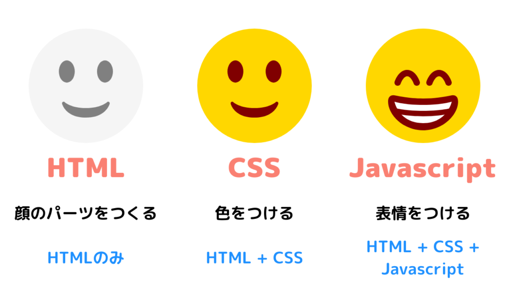

第一回課題まとめ
・htmlとは何か
HTMLは、HyperText Markup Languageの略称であり、ウェブページを作成するための標準的なマークアップ言語である。HTMLはテキストベースで、文書の構造やコンテンツを記述し、ブラウザが理解して表示するためのルールを提供する。要素と呼ばれるタグを使用して、テキスト、画像、リンク、フォームなどの異なる要素を配置し、ウェブページの見た目や動作を定義する。 HTMLはウェブ開発の基本的な要素であり、CSS（Cascading Style Sheets）とJavaScriptと組み合わせて、ウェブページのデザインと機能を制御するものである。
・html,CSS,Javascriptの関係性

HTMLとCSSとJavascriptを組み合わせるというのはつまりどういう意味なのか。HTMLはコンテンツの構造を、CSSはスタイルを、JavaScriptは動的な振る舞いを制御するために使用される異なる要素である。これらの技術を組み合わせて、ウェブページやウェブアプリケーションを開発する。上部の写真を元に言葉を言い換えると、HTMLで顔のベースとなるパーツを配置（プログラム構成の作成）、CSSで顔の表面となる色などを決定（スタイルの構成）、Javascriptで顔の表情や動作を作る（配置された構成に動きを促す）ことで初めてウェブページやウェブアプリケーションをフルに活用ができる。
・gitとは何か
Gitとは、ソースコードの変更履歴を記録、追跡するための分散型バージョン管理システムである。開発者間で記述したソースコードの変更履歴を記録したり、プログラムのバージョン管理や社内での共有をスムーズにしたりすることができる。GitはLinuxカーネルのソースコード管理のためにリーナス・トーバルズによって開発された。現在では、多くのソフトウェアのソースコードや Webサイトのコード、ドキュメント管理などに用いられている。Gitではファイルの状態を好きなときに更新履歴として保存しておくことができる。そのため、一度編集したファイルを過去の状態に戻したり、編集箇所の差分を表示したりすることもできる。